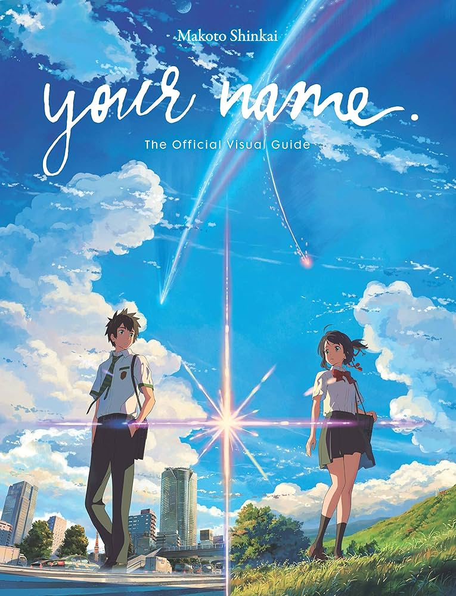

Meus Assistidos
⭐ 8,7
1. Ilha do Medo
×

Ilha do Medo
Adicionado em: 22/05/2025
Ano: 2010
Duração: 2h 18min
Gêneros: Thriller/Mistério
Classificação: 16 anos
Nota: ⭐ 8,7
Nos anos 1950, a fuga de uma assassina leva o detetive Teddy Daniels e seu parceiro a investigarem o seu desaparecimento de um quarto trancado em um hospital psiquiátrico. Lá, uma rebelião se inicia e o agente terá que enfrentar seus próprios medos.
Direção: Martin Scorsese
Elenco: Leonardo DiCaprio, Mark Ruffalo, Ben Kinsglay
Disponível em:
⭐ 9,7
2. Green Book

⭐ 9,8
3. Duna

⭐ 9,3
4. Interestelar
⭐ 9,8
5. The Batman

⭐ 9,0
6. Your Name
⭐ 10,0